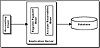
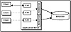
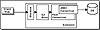

|
|
 |

|
Developing Java Enterprise Applications
by Stephen Asbury ; Scott R. Weiner
Wiley Computer Publishing, John Wiley & Sons, Inc.
ISBN: 0471327565 Pub Date: 02/01/99

|
CHAPTER 15
What Are Enterprise JavaBeans?
Enterprise JavaBeans (EJB) is a specification for components that live on a server. The goal of the EJB specification is to define a standard way of creating components that participates in distributed object-oriented applications. In the same way that JavaBeans define a standard interface for application components, EJB defines a standard for server components. Using enterprise beans, Java developers will be able to build distributed programs more quickly by plugging together targeted, well-defined pieces. Figure 15.1 diagrams a possible application of this technology.
The motivating factor behind Enterprise JavaBeans is to make it easier to create network-enabled applications. This requires the application to have an easy way to define its various components. JavaBeans is the standard used to define client-side components, and Enterprise JavaBeans is the standard for defining server-side components. Of course, some large, multitier applications may actually use JavaBeans and EJBs in the same application because this application might be a server for one tier and a client for another. A great example of this is the new set of JavaBeans announced for JDBC 2.0. These include a data source object for accessing the database. An EJB might use this JavaBean to access its supporting database. One tier is the client, another the EJB, and a third the database.
In creating this standard, Sun and its partners strove to make server computing easier. Making things easy is often a hard goal, especially in server computing, in which transaction processing, database access, and resource management are all amplified by the number of clients accessing an application. However, the EJB specification does a great job of hiding these complexities from the program. In particular, EJB programmers don’t have to worry about multithreading, transactions, or many of the other features in advanced servers, such as connection pooling. As well as making programming easier, Enterprise JavaBeans have the following goals:

Figure 15.1 An example EJB application.
- • Clearly define the way that applications are partitioned: client versus EJB versus server and so on.
- • Create a model that improves scalability and performance. Enterprise JavaBeans live on servers; they can communicate with other services like JBDC and with other enterprise beans. A network of enterprise beans can be used to create a highly scaled, optimized distributed application. By organizing the applications into tiers, a designer can gain the benefit of scalability and localization to increase the total number of clients supported.
- • Increase reliability by moving important code to a well-defined container. This container can protect a bean from interactions with other server entities, as well as protecting the server from the bean. Exceptions are also used to define a clear error-handling interface for EJB programming.
- • Centralize resources to increase manageability.
- • Promote reuse via well-defined, portable components.
- • Support multiple types of clients, from Java applets to legacy systems, smart cards, and personal digital assistants (PDAs) to supercomputers.
An Enterprise JavaBean, like the ones created in the next chapter, is really just a Java object. Like an applet, the EJB doesn’t define a complete application, only a specific part of the application. The applet is hosted by a browser, but an EJB is hosted by a server that uses a program entity called a container to define the bean’s interactions with the outside world. This container creates a safe environment for the bean and provides services to it. A great example of the container providing services to a bean is resource pooling. Take the example in which you are using JDBC to access a database. JDBC represents database connections with Connection objects. These connections take up resources on the client and, often, on the server. As a result, many programmers like to use as few connections as possible.
In a large application, connections are often shared via pools. The pool will contain several connections, and an object will borrow a connection from the pool when it needs one. Of course, this technique is used mainly in situations in which multiple objects are doing work in separate threads. If there is only one thread in an application, there is less motivation to share resources, because there can be only one thread open at a time. So, in the multithreaded case, a pool is used to allow several objects to share a connection. This sharing is based on two principles. First, it is assumed that there are enough connections to provide reasonable response; second, the objects do not require connections all the time.
For example, if three clients are accessing three server objects, but only about half of the client operations require database access, that means that two connections can be used to provide the clients with acceptable performance. This scenario, pictured in Figure 15.2, is similar to the concept of modem pooling used by Internet service providers. These providers don’t buy a modem for every customer. Instead, they bet that not all of the customers would call at the same time. The real science of this type of pooling is figuring out exactly how many resources are enough to provide sufficiently good performance to the user. In general, this decision should be based on experience testing an application with a variety of resource settings.
One way that the server supports these services is by hiding the bean behind the container, as pictured in Figure 15.3. Clients do not actually talk directly to bean objects, even through RMI. Instead, beans talk to stubs and skeletons, or some other proxy, generated by the container. This proxy includes the code that manages pools, resources, transactions, and the bean’s very existence. As a developer, you must understand that the bean is separated from the client by the container while at the same time realizing that in 90 percent of the cases, you can ignore this situation. For clients, this separation is transparent and should not affect their programming style.
At the same time that the EJB specification hides complexity, it also provides hooks for advanced programmers to get under some of the covers represented by the container and directly access low-level services. For example, most EJB programmers don’t need to think about transaction processing with their applications. However, developers can manage their own transactions if they choose to.

Figure 15.2 Resource pooling.

Figure 15.3 Container-protected EJB.
|


){kind=link}
){kind=link}
){kind=link}
){kind=link}
){kind=link}
){kind=link}